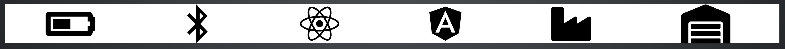

# Demystifying the Whiteboard Interview _By Daniel Scheufler_
## Overview * Who am I? * What is a Whiteboard Interview? * Core: Whiteboarding as _Conversation_ * Visual Language * Some Tips/Steps * Live Examples * Helpful Resources


Who am I?
Christian
Husband
Father
Improver
'Man-Machine Translator'
## What is a Whiteboard Interview?
## Whiteboarding as Conversation
## Whiteboarding as Conversation * Conversation vs. _Examination_ * __Goal:__ Communication between you and your interviewer * _Implication:_ Different rules apply! * __You are allowed to ask questions!__
## Whiteboarding as Conversation * Note - this happens in multiple mediums at once * *verbally* * literally * __visually__
## Visual Language Example: Lock and Envelope <br/>  
## Visual Language Be warned: No symbol has the same meaning to all people!<br/> Example: Alternative Lock <br/> 
Visual Language
Just like learnign C# or Java, you can learn visual languages
Start with some vocabulary:
See
The Noun Project
or
Font Awesome

## Tips and Tricks
## 3 Types of Question * Algorithm * Do X with Y, assuming Z * Brain-Teaser * Whats the minimum time to X? * How many Y fit in Z ? * Design * How would you design a system to do X ?
## Best Advise: * Breathe * Explain your thoughts * _Don't worry about the right answer_ * Because it is a [conversation](#conversation-v-examination)
## And of course... 
## Alright... But what do we do? 0. _(Don't Freeze)_ 1. Clarify your understanding * Ask questions 2. Identify your constraints * Write them down 3. Enumerate some test cases * Then use them to assess your sol'n
## Live Examples
## Live Example: Algorithm Implement a Multiply Function without using *
## Algorithm Review 1. Clarify your understanding * English Statement of Problem, in my own words. 2. Identify your constraints * Only integers * Positive and Negative numbers _(And 0)!_ 3. Enumerate some test cases * Debugger Table
## Live Example: Brain-Teaser <br/> _Avoiding a wall of text_
## Brain-Teaser Review 1. Clarify your understanding * Can take as many trips as desired, but each costs time * No more than 2; Not constrained to 2 2. Identify your constraints * 1 Flashlight, it must cross each time * Max 2/trip * trip cost = slowest time 3. Test cases? * not so much; But Debugger table still useful.
## Design Problems * Don't have time top **teach** how to design * But do have time to teach **how to show** designs
## Live Example: Design * Describe a flow: [Pretty Good Encryption](https://en.wikipedia.org/wiki/Pretty_Good_Privacy) * Remember the [Lock and Envelope](#lock-and-envelope)?
## Live Example: Design 2 * Async Responses to User Input - ECommerce Site
## Live Example: Design 3 * Multi-User/Role System - Marketing, POS, Customer
## Design Review * Boxes and Arrows * Mized Messagine: __Visual__ and Literal * _Conversation is **much** more important_ * The symbols are for reference
## Recap 1. Whiteboarding is a conversation * Use its full potential -> Visual Communication! 2. Don't Panic! 3. Can't Start? Try These 1. Clarify your understanding 2. List your constraints 3. Write some test cases
## Recap 2 * Practice! (Yea, you can do that :P ) * Use a blank sheet of paper * Try to explain the problme, your solution to your spouse * Works especially well if they aren't in software!
## Some Example Problems * Algorithm type 1. Write the algorithm to reverse an array. * (Now do it in place) 2. Write an algorithm to process an array of numbers, and report various statistics of that array. * (Mean, Mode, Std. Deviation, etc.) 3. Write an algorithm to determine if a given string is a Palindrome
## More Example Problems * Brain-teaser type 1. you have 8 identical balls. One has greater weight. * Given just a counter balance, what is the least number of weights to find the heaviest ball?
## Even More Example Problems * Design type 1. How would you design a program to simulate the game of monopoly? 2. Assuming a typical ECommerce site, with search, product and cart pages. * What changes/practices would you use to improve the site? * _(Think usability, profitability, maintainability, etc.)_
## Minor note on Design Problems * Design problems are harder to discuss with non-technical friends.
## Resources * Icon Projects * [The Noun Project](https://thenounproject.com/) * [Font Awesome](https://fontawesome.com/) * [Spofity Engineering Culture Videos](https://www.youtube.com/watch?v=4GK1NDTWbkY) * Pay attention to symbols and drawings used while describing their practices!
## Resources * Search Terms * Whiteboarding * Whiteboarding Techniques * Example Problems * This Slide Deck * [Google Tech Dev Guide](http://techdevguide.withgoogle.com)
## Having any feedback? 
## Care for more? * [daniel.scheufler.io](//daniel.scheufler.io) * [daniel@scheufler.io](mailto:daniel@scheufler.io)